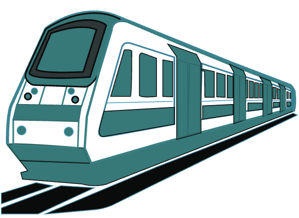

Bus
A convenient transport method that can be used to travel to and from Castle hill (and further) is the bus.
Travelling by bus allows people to travel to specific areas, allowing people to arrive closer to their desired
locations. Similar to most other transport options in Sydney, buses require payment to ride, and failing to pay may
result in a hefty fine. Payment options include, card and opal card.

Travelling by metro is fast and convenient, perfect for teenagers who want to make the most out of their outings
with their friends. The time for the average metro rides ranges between 2-35 minutes, depending on your starting and ending
points. However, it is important to plan before a trip, as trackwork may temporarily disable metro services. Similar to bus,
payment options include card and opal card, but one time tickets can also be purchased
Train
Trains are another efficient transport method in Sydney, combining aspects of both buses and metros. Trains offer
faster travel than buses alongside a broader range of stops than the metro. Furthermore, trains have the same payment
options as metros, card, opal card and also one time tickets.